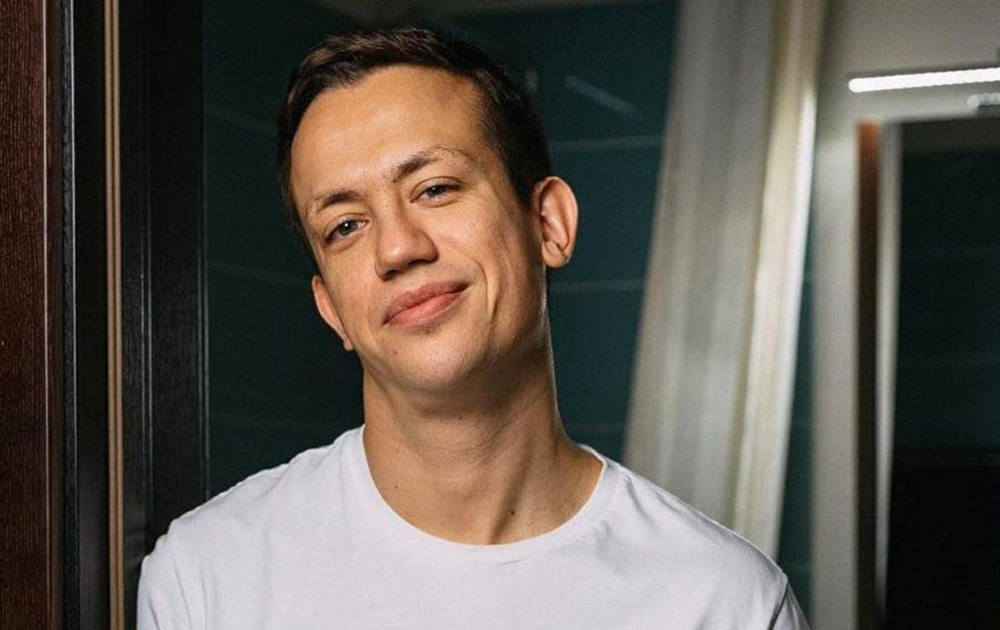
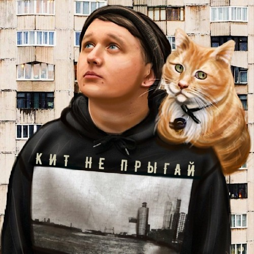

Олексій Дурнєв
Здобув популярність завдяки розважальному шоу "Дурнєв +1. Маючи токсичне почуття гумору, Альоша вирішив піти в журналістику. Так він створив свою продакшн-студію. У 2011-му році на телеканалі "ТЕТ" вийшло його авторське шоу "Дурнєв + 1". Співведучою Льоші стала Даша Ши. У програмі Олексій і його напарниця тролили знаменитостей. Шоу швидко набуло широкої популярності.Проте у 2014-му році воно зникло з екранів. Тоді ж Олексій Дурнєв висунув свою кандидатуру на парламентських виборах. Отримати перемогу йому не вдалося.Подальша публічна діяльність Дурнєва обмежилася постами в соцмережах. У 2018-му році він повернувся в медійне середовище. Дурнєв став випускати стьобні ролики про Instagram-профілі знаменитостей.
Михайло Лебіга
Автор популярного мему "НУ ЯК ЦЮ НЕНЬКУ МОЖНА НЕ ЛЮБИТИ" – блогер, тіктокер, а тепер ще й стрімер Михайло Лебіга. На його трансляціях протягом місяця в середньому знаходилося 786 глядачів (2009 на піку). У ефірах Leb1ga найчастіше можна побачити за грою у Dota 2 або ж переглядом "мемних" реаліті-шоу на кшталт "Від пацанки до панянки" та "Детектор брехні".
Льви на джипі

YouTube-канал Леви на джипі заснували три українських коміки Андрій Лузан, Валентин Міхієнко та Микола Зирянов. Тематикою каналу є гумористичні шоу різних форматів. Гостями їхніх шоу є коміки, а також відомі українські актори, співаки, телеведучі, блогери. З настанням повномасштабного вторгнення Леви на джипі активно допомагають армії, створюють українськомовний контент та нові проєкти. Коміки намагаються закривати потреби українськомовної аудиторії на основному каналі й розробляють соціально важливі проєкти на майбутнє. У розробці в них є проєкти, які спрямовані на привернення уваги до українського підприємництва, контент-мейкінгу тощо.